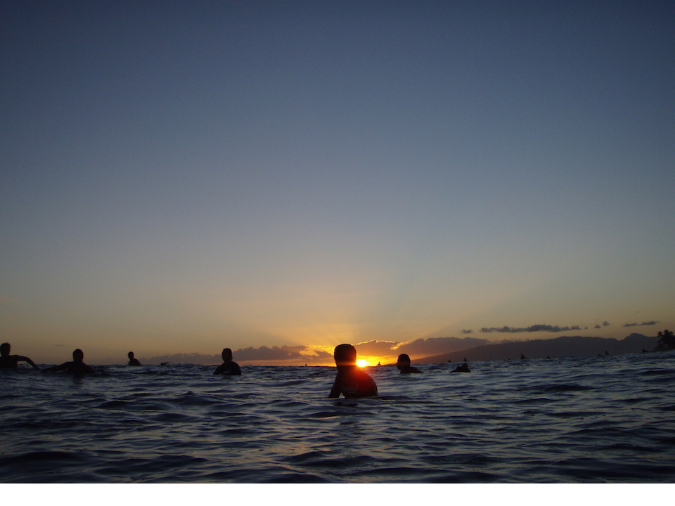

Data is empowering. With data, experiences become tangible, more visceral and emotional. With data, we transform activities that are subjective and difficult to measure into quantifiable and objective performance insight. As enthusiasts, all of us set out to be the best at the things we love the most. How can a surfer systematically improve performance? How can you digitally record, analyze, and share your most memorable activities? Red9’s mission is to give you the tools that measure and quantify every movement, because Every Move Counts.
Red9’s technology platform records motion with Red9 Sensor and processes it on Red9’s Data Science Platform. The Red9 Data Science Platform is designed to process large volumes of raw time-series data with advanced data science. We use machine learning and data mining to analyze your every move. Red9 is not a location tracker or a fitness device. Red9 is data science intelligence that helps you visualize the way you move, improve your performance, and tell a story at the same time.
We will begin shipment of the Red9 Sensor in 2015. Sign up for updates! 